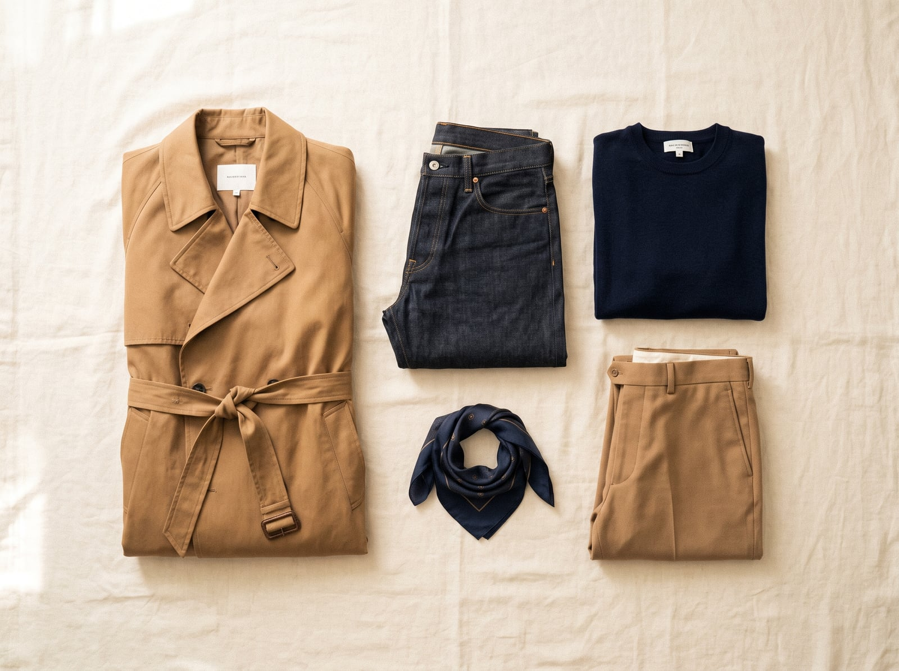
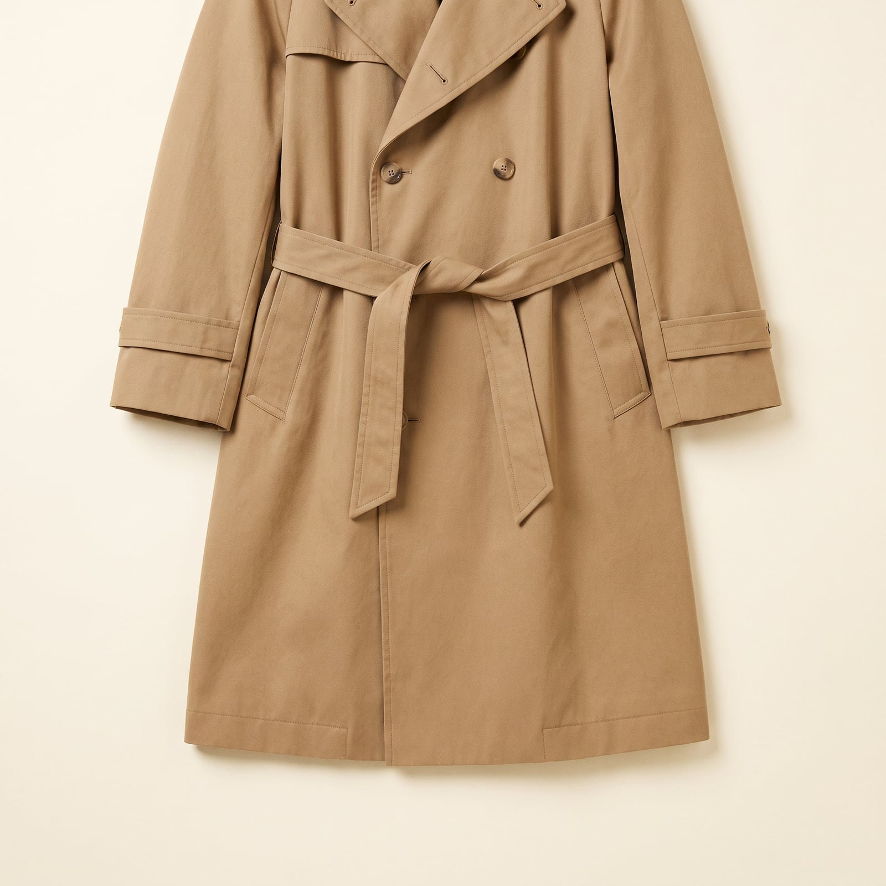
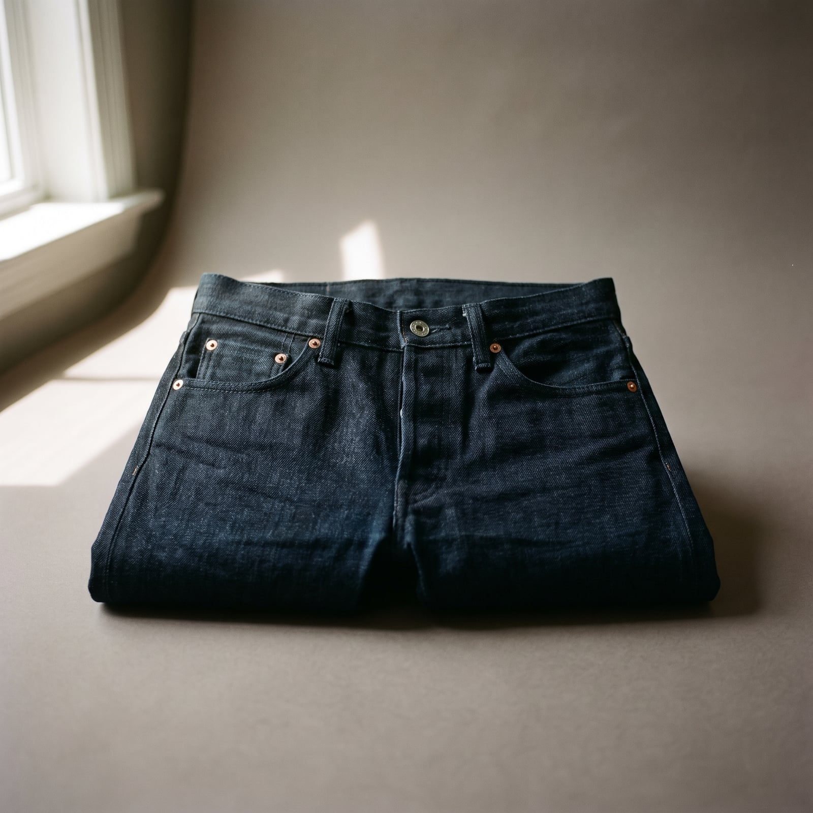
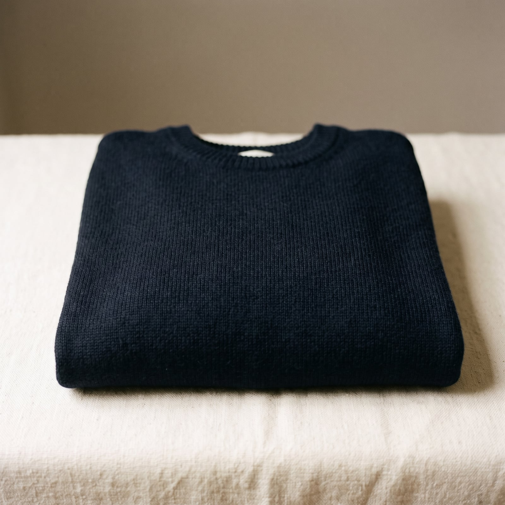
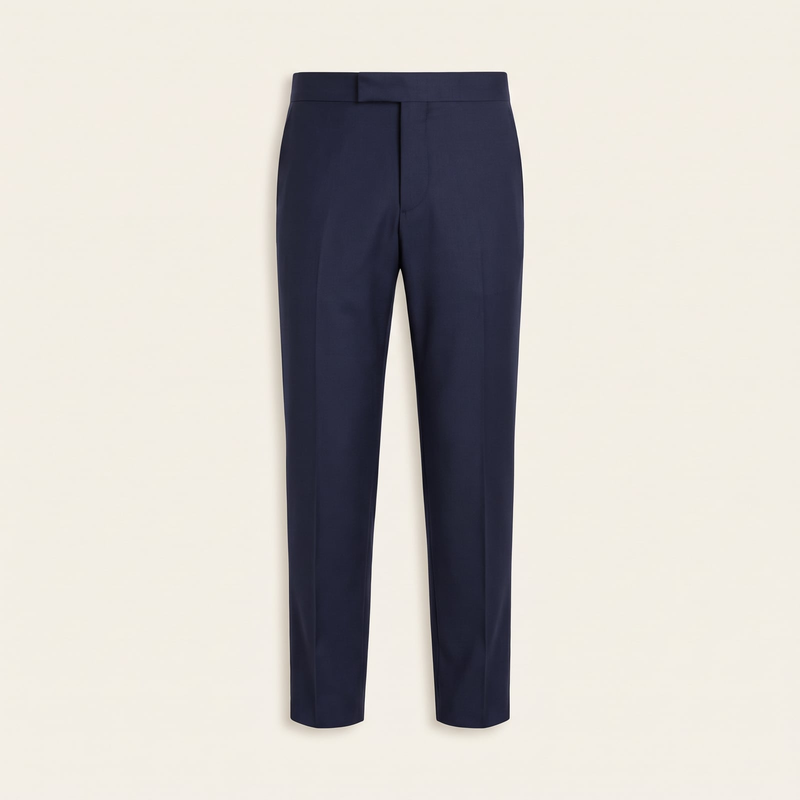
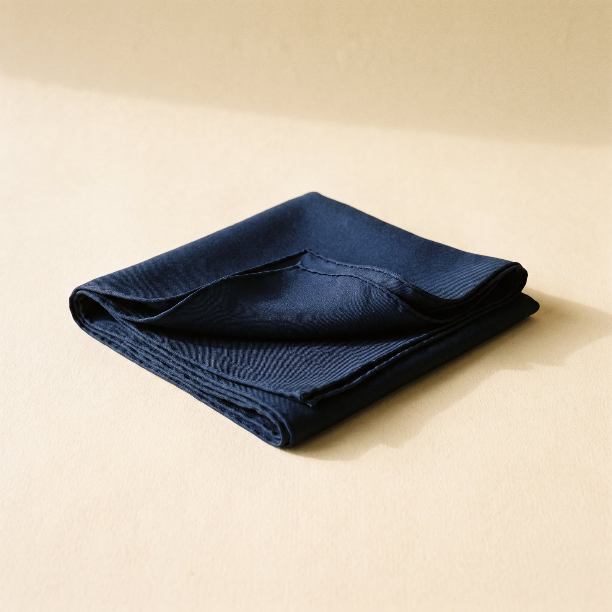

The Rive Gauche
The Left Bank version of dressing well descends less from any single house than from a whole cafe culture — the Saint-Germain-des-Prés cohort of the 1950s, existentialists and their imitators in black turtlenecks and simple trousers, dressing like ideas mattered more than clothes and getting the clothes exactly right regardless. Yves Saint Laurent later democratized the same instinct into ready-to-wear, and in 1987 Jean Touitou founded A.P.C. as an explicit rebellion against logomania — no branding, no noise, just raw denim and a trench coat, repeated season after season with only minor revisions.
The trademark, such as it is, is a kind of curated repetition: a Parisian closet tends to be small and extremely deliberate, built around a handful of correct items — the trench, the navy sweater, the well-cut trouser — worn until they're part of the person rather than an outfit. Nothing is bought to be worn once. Nothing performs enthusiasm.
It suits people who think trying visibly hard is itself a kind of failure — who'd rather their taste be inferred than announced, and who trust a small, well-edited wardrobe more than a large impressive one. There's an intellectual confidence to it: having opinions about denim washes is a perfectly serious way to spend an afternoon, as long as no one catches you admitting it.
- The trench coat, worn as a neutral rather than an event
- Raw denim paired down with a plain T-shirt or fine-gauge knit
- A tight, repeating color story — navy, white, camel, black
- Scarves and minimal accessories used sparingly, never as the point
- A small wardrobe, curated rather than accumulated, worn into familiarity

The Trench Coat
Burberry patented gabardine in 1888 and outfitted British officers with the trench in the First World War; the French intelligentsia adopted it decades later less for the weather than for the silhouette, treating it as the one coat that made every other coat unnecessary.
The original patent-holder's construction, or Mackintosh's bonded, seam-sealed cloth.
Shop this →
The Raw Denim
Jean Touitou's A.P.C. built an entire philosophy around one raw, unwashed, unadorned jean starting in 1987 — no fading kit, no factory distressing, just cotton left to earn its own creases.
The house that defined this exact approach to the jean.
Shop this →Heavier selvedge cloth from the same maker, cut identically.
Shop this →
The Navy Sweater
A plain navy crewneck or sailor's sweater is the Left Bank wardrobe's quiet constant — Picasso wore a Breton-adjacent knit for decades for exactly the reason this wardrobe reveres it: it never needed replacing with anything more interesting.
A genuinely fine merino gauge at an unusually low price.
Shop this →The finest merino or cashmere the tier reasonably reaches.
Shop this →
The Well-Cut Trouser
French tailoring for the Left Bank wardrobe favors a trouser that looks tailored without announcing a suit — a single garment doing the formality work a full suit would elsewhere.
The exact silhouette most associated with this wardrobe.
Shop this →Cut and finished with real tailoring hand-work, still worn without a jacket.
Shop this →
The Silk Scarf
A plain or subtly patterned silk scarf, worn loosely knotted rather than tucked, is the one accessory this otherwise austere wardrobe allows itself — a small, deliberate flourish in an outfit built entirely around restraint.
A step into genuine French silk-house quality.
Shop this →The house most responsible for the idea of a silk scarf as a menswear staple at all.
Shop this →Keep the wardrobe genuinely small and let every piece earn its place through repetition — the trench, the raw denim, the navy sweater should all be good enough and versatile enough to wear on rotation without anyone noticing you're doing it. Buy the trench in a true neutral rather than a fashion color, since it's meant to function as a blank canvas worn almost daily, not an event piece.
Let a small amount of visible wear into the wardrobe on purpose — slightly broken-in denim, a scarf tied the same casual way each time — since the whole aesthetic depends on looking established rather than newly assembled. Spend on fit over logo; this style reads as expensive through silhouette and fabric, never through a visible brand mark.
Don't let the trench coat become a costume piece — worn open, over jeans and a plain sweater, it's a neutral; buttoned to the neck with a belt cinched for effect, it starts to read as a Halloween detective rather than someone dressing for an ordinary Tuesday. The beret-and-baguette version of this style some people reach for is the same mistake: the actual look has almost no props, which is exactly what makes it read as considered rather than performed.
Avoid mixing in any single statement piece — a bold pattern, a bright color, a logo — since the entire wardrobe operates on a tight, repeating palette of navy, white, camel, and black, and one loud item breaks the whole quiet effect. This is a style built on restraint; the moment it starts trying to be noticed, it stops working.
The trench stays home; a lightweight linen-cotton blazer or just the navy sweater alone, raw denim in a lighter wash, espadrilles instead of anything leather.
The trench comes fully into its own, belted this time, over a heavier wool sweater. A scarf, wrapped once, is the only real addition -- this wardrobe resists over-layering.
The trench was built for exactly this -- cotton gabardine actually sheds water reasonably well. An umbrella only if truly necessary; getting slightly wet is preferable to looking overprepared.
A heavier wool coat replaces the trench temporarily, boots replace the usual loafer or sneaker, but the palette and the general austerity hold firm.
The well-cut trouser gets a matching jacket (a rare full suit for this wardrobe), the sweater becomes a crisp white shirt, and the whole effect stays as understated as always -- just sharper.

Paris, obviously, but specifically the same six blocks of it, revisited rather than explored — a new arrondissement is treated with more suspicion than curiosity.
Otherwise, a small French coastal town in the off-season, empty of other tourists, where the appeal is precisely that nothing is scheduled and no one is impressed by anything.
Camus and Sartre, less for the philosophy than the posture, and Patrick Modiano for the melancholy, read in the original when the French is manageable and in translation without embarrassment when it isn't.
Le Monde read at a cafe rather than a desk, folded a specific way, with opinions about the op-ed page voiced to no one in particular.
Find it on Amazon →Serge Gainsbourg and Francoise Hardy on rotation, plus jazz — specifically the American expatriates who played Paris in the 1950s and '60s, treated as more authentically French than most French music.
A vinyl collection that's more about the ritual of choosing a record than any deep expertise, played at a volume just loud enough to justify not talking for a while.
Listen on YouTube →A small apartment with excellent bones — high ceilings, tall windows, a fireplace that may or may not still function — furnished sparsely enough that the architecture stays the point.
A few genuinely good books rather than many mediocre ones, and a record player that's used, not displayed, sitting slightly askew on a shelf that's never quite been leveled.
See more on Pinterest →Long, aimless walks with a destination pretended for anyone who asks, and a firm, frequently restated opinion about which cafe makes the best espresso within reasonable walking distance.
Cinema — the kind with subtitles, seen alone, on a weeknight — followed by exactly enough analysis over one more drink to feel like the evening had a point.
Learn more →